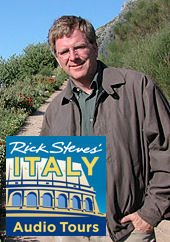

Rick Steves is a popular writer of European travel guidebooks and host in several travel shows on public television and public radio. His excellent Italy guides offer plenty of detailed information on places to visit and affordable accommodations in main Italy destinations (N.B. Our eBook is a perfect companion of Rick's guides as we focus on the Italian culture and how to deal with everyday things in your trip). Among his new media initiatives that I like the most are the FREE audio walking tours of Rome, Florence and Venice. These audio tours are downloadable MP3 files narrated by Rick himself that you can put on your portable device such as an iPod or SmartPhone. Rick explains the history of places like the Sistine Chapel, the Colosseum, the Uffizi Gallery and other important locations as if you were hiring a dedicated guide. I praise Rick for embracing blogging and podcasting as a way to create conversations with his audience and I look forward to see his audio tours start covering more areas outside the classic tourist circuit.